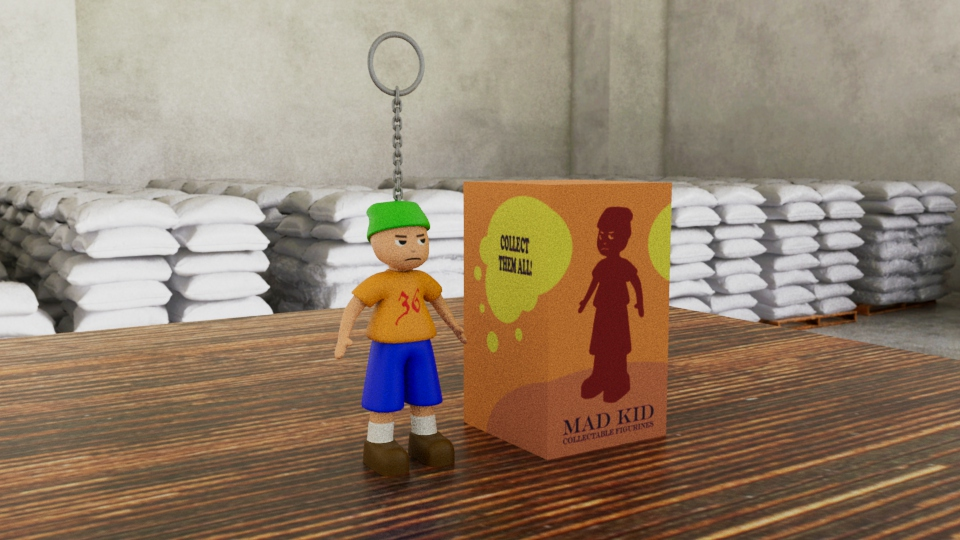
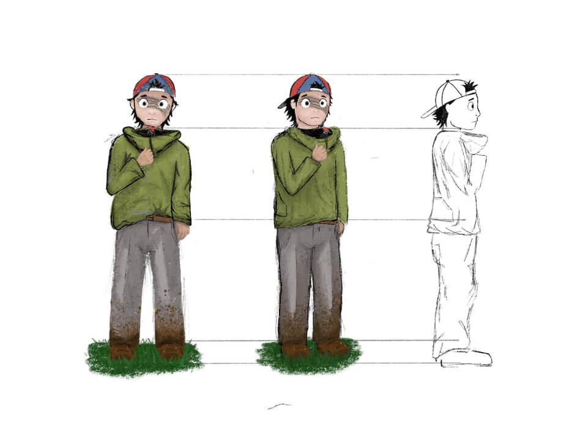

PORTFOLIO
Some smaller projects I made while in the IMD program at Camosun.

Figurine Model Project
Designed, Modeled and textured a figurine in Maya.

Recreating objects from photos in Maya
Above is a render of an Ikea Chair I recreated by using several photos as reference.

Character Design & Storytelling
Click the character concept image to see my project where I used Procreate to create a series of drawings to tell the story of a character.